Suchen
Das Suchen ist eine grundlegende Operation in der Informatik. Viele Probleme in der Informatik können auf Suchaufgaben zurückgeführt werden.
Gemeint ist mit Suchen das Wiederauffinden eines Datensatzes aus einer Menge von früher gespeicherten Datensätzen, oder das Auffinden einer bestimmten Lösung in einem (potentiell großen) Suchraum möglicher Lösungen. Ein paar einleitende Worte zum Suchproblem findet man hier.
Contents
Überblick über verschiedene Suchmethoden
Um sich der Vielseitigkeit des Suchproblems bewusst zu werden, ist es sinnvoll, sich einen Überblick über verschiedene Suchmethoden zu verschaffen.
Hier sei auch auf einen bereits existierenden Wikipedia-Artikel zu Suchverfahren verwiesen.
Allen gemeinsam ist die grundlegende Aufgabe, ein Datenelement mit bestimmten Eigenschaften aus einer großen Menge von Datenelementen zu selektieren. Dies kann, natürlich ohne jeden Anspruch auf Vollständigkeit, nach einer der jetzt diskutierten Methoden geschehen:
- Schlüsselsuche: meint das Suchen von Elementen mit bestimmtem Schlüssel; ein klassisches Beispiel wäre das Suchen in einem Wörterbuch, die Schlüssel entsprechen hier den Wörtern, die Datensätze wären die zu den Wörtern gehörigen Eintragungen.
- Bereichssuche: Im Allgemeinen meint die Bereichssuche in n-Dimensionen die Selektion von Elementen mit Eigenschaften aus einem bestimmten n-dimensionalen Volumen. Im eindimensionalen Fall will man alle Elemente finden, deren Eigenschaft(en) in einem bestimmten Intervall liegen. Die Verallgemeinerung auf n-Dimensionen ist offensichtlich. Ein Beispiel für die Bereichssuche in einer 3D-Kugel wäre ein Handy mit Geolokalisierung, welches alle Restaurants in einem Umkreis von 500m findet. Lineare Ungleichungen werden graphisch durch Hyperebenen repräsentiert. In 2D sind diese Hyperebenen Geraden. Die Ungleichungen können dann den Lösungsraum in irgendeiner Form begrenzen.
- Ähnlichkeitssuche: Finde Elemente, die gegebenen Eigenschaften möglichst ähnlich sind. Ein prominentes Beispiel ist Google (=Ähnlichkeit zwischen Suchbegriffen und Dokumenten) oder das Suchen des nächstengelegenen Restaurants (Ähnlichkeit zwischen eigener Position und Position des Restaurants). Ein wichtiger Spezialfall ist die nächste-nachbar Suche.
- Graphensuche: Hier wäre beispielsweise das Problem optimaler Wege zu nennen (Navigationssuche). Dieser Punkt wird später im Verlauf der Vorlesung noch einmal aufgegriffen werden.
Im jetzt folgenden wird nur noch die Schlüsselsuche betrachtet werden.
Sequentielle Suche
Die sequentielle oder lineare Suche ist die einfachste Methode, einen Datensatz zu durchsuchen. Hierbei wird ein Array beispielsweise sequentiell von vorne nach hinten durchsucht. Ein prinzipieller Vorteil der Methode ist, dass auf der Eigenschaft der Datenelemente, nach denen das Array durchsucht wird, keine Ordnung im Sinne von > oder < definiert zu sein braucht, lediglich die Identität (==) muss feststellbar sein. Der folgende Python-Code zeigt, wie man sequentielle Suche einsetzen kann:
a = ... # array mit den zu durchsuchenden Elementen foundIndex = sequentialSearch(a, key) # foundIndex == -1 wenn nichts gefunden, 0foundIndex < len(a) wenn key gefunden (erster Eintrag mit diesem Wert)
Wir verwenden hier die Konvention, dass der zugehörige Arrayindex zurückgegeben wird, falls ein Element mit dem Schlüssel key gefunden wird (falls es mehrere solche Elemente gibt, wird das erste zurückgegeben). Das Ergebnis -1 signalisiert hingegen, dass kein solches Element gefunden wurde. Die Funktion sequentialSearch kann folgendermaßen implementiert werden:
def sequentialSearch(a, key):
for i in range(len(a)):
if a[i] == key: # bzw. allgemeiner a[i].key == key
return i
return -1
Wir wollen jetzt die Komplexität dieses Algorithmus bestimmen, wobei die Problemgröße durch N = len(a) gegeben ist.
Dabei nimmt man an, dass der Vergleich in der inneren Schleife (a[i] == key) jeweils
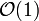
ist (diese Annahme könnte verletzt sein, wenn der Vergleichsoperator eine komplizierte Berechnung mit höherer Komplexität ausführen muss). Bei einer erfolglosen Suche wird dieser Vergleich in der for-Schleife N-mal durchgeführt (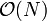
), bei einer erfolgreichen Suche im Mittel (N/2)-mal (ebenfalls ). Nach der Verschachtelungsregel erhält man also eine gesamte Komplexität von .Der Name lineare Suche rührt von diesem linearen Anwachsen der Komplexität mit der Arraygröße her.
Binäre Suche
Wie wir weiter unten zeigen werden, gestattet es diese Suchmethode, die Gesamtdauer der Suche in großen Datensätzen beträchtlich zu verringern. Die Methode beruht auf dem Divide and Conquer-Prinzip, wobei die Suche in jedem Schritt rekursiv auf eine Hälfte des Datensatzes eingeschränkt wird. Weitere Details zur Methode sind hier zu finden.
Die Methode ist nur dann anwendbar beziehungsweise effektiv, wenn folgendes gilt:
- Auf der Eigenschaft der Daten, die zur Suche verwendet wird, ist eine Ordnung im Sinne von < oder > definiert.
- Wir wollen uns auf Datensätze beschränken, die schon fertig aufgebaut sind, in die also keine neuen Elemente mehr eingefügt werden, wenn man mit dem Suchen beginnt. Ist dies nicht der Fall, müsste nach jeder Einfügung das Array neu sortiert werden (unter diesen Umständen wäre die Verwendung eines Suchbaumes geschickter).
Im Unterschied zur sequenziellen Suche müssen wir jetzt das Array sortieren bevor die Suchfunktion aufgerufen werden kann:
a = [...,...] # array a.sort() # sortiere über Ordnung des Schlüssels foundIndex = binSearch(a, key, 0, len(a)) # (Array, Schlüssel, von wo bis wo suchen im Array) # foundIndex == -1 wenn nichts gefunden, 0
Der folgende Algorithmus zeigt eine beispielhafte Implementierung der Methode:
def binSearch(a, key, start, end): # start ist 1. Index, end ist letzter Index + 1
size = end - start #
if size <= 0: # Bereich leer?
return -1 # also nichts gefunden,
center = (start + end)/2 # Integer Division (d.h. Ergebnis wird abgerundet, wichtig für ganzzahlige Indizes)
if a[center] == key: #
return center # Schlüssel gefunden,
elif a[center] < key:
return binSearch(a, key, center + 1, end) # Rekursion in die rechte Teilliste
else:
return binSearch(a, key, start, center) # Rekursion in die linke Teilliste
Zur Berechnung der Komplexität dieses Algorithmus vernachlässigen wir zunächst den Aufwand, den die Sortierung verursacht (wir diskutieren unten, wann dies nicht zulässig ist). Wir setzen N = len(a).
Im obigen Code ist zu erkennen, dass fast alle Anweisungen des Algorithmus die Komplexität . Nach der Sequenzregel hat auch deren Hintereinanderausführung die Komplexität . Es bleibt die Komplexität der Rekursion zu berechnen. Die gesamte Komplexität des Algorithmus (jetzt als Funktion f bezeichnet) setzt sich zusammen aus den oben erwähnten -Anweisungen sowie der Rekursion auf einem Teilarray der halben Größe
Zur Vereinfachung nehmen wir an
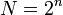
, so dass gilt
Für große Datenmengen ist die binäre Suche also weit effizienter als die lineare Suche. Verdoppelt sich beispielsweise die zu durchsuchende Datenmenge, so verdoppelt sich der Aufwand für die sequentielle Suche - bei der binären Suche hingegen benötigt man lediglich eine zusätzliche Vergleichsoperation.
Für kleine Daten (
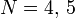
) ist die sequentielle Suche jedoch schneller als die binäre Suche, da hier die rekursiven Funktionsaufrufe teurer als das Mehr an Vergleichen sind. Ein anderer ungünstiger Fall ist gegeben, wenn nur sehr wenige Suchanfragen erfolgen (weniger als viele). Dann wird der Aufwand durch das Sortieren des Arrays dominiert, ist also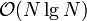
. Auch dann ist sequentielle Suche vorzuziehen.Eine relativ einfache Möglichkeit, die binäre Suche zu verbessern, ist die sogenannte Interpolationssuche. Hierbei wird die neue Position für die Suche, also die Mitte des Arrays, durch eine Schätzung ersetzt, die angibt, wo sich der Schlüssel innerhalb des Arrays befinden könnte. Bei der Suche in einem Telefonbuch nach dem Namen Zebra würde man ja auch nicht in der Mitte anfangen. Näheres hierzu im Buch von Sedgewick.
Um sich den Algorithmus der binären Suche klar zu machen, ist es instruktiv, sich die folgende Tabelle genauer anzusehen, die die sukzessive Belegung der Variablen bei verschiedenen Anfragen beschreibt. Die Testfälle wurden nach dem Prinzip des domain partitioning gewählt. Das zugehörige Array hat die Einträge
a = [2, 3, 4, 5, 6]
| gesuchter key | start | end | size | center | return (-1 oder index) |
Kommentare |
|---|---|---|---|---|---|---|
| 4 | 0 | 5 | 5 | 2 | 2 | gefunden |
| 2 | 0 | 5 | 5 | 2 | linker Randfall | |
| 0 | 2 | 2 | 1 | |||
| 0 | 1 | 1 | 0 | 0 | gefunden | |
| 1 | 0 | 5 | 5 | 2 | links außerhalb | |
| 0 | 2 | 2 | 1 | |||
| 0 | 1 | 1 | 0 | |||
| 0 | 0 | 0 | -1 | nichts gefunden | ||
| 6 | 0 | 5 | 5 | 2 | rechter Randfall | |
| 3 | 5 | 2 | 4 | 4 | gefunden | |
| 5 | 0 | 5 | 5 | 2 | typischer Fall | |
| 3 | 5 | 2 | 4 | |||
| 3 | 4 | 1 | 3 | 3 | gefunden | |
| 7 | 0 | 5 | 5 | 2 | rechts außerhalb | |
| 3 | 5 | 2 | 4 | |||
| 5 | 5 | 0 | -1 | nichts gefunden |
Suchbäume
Effiziente Suchalgorithmen kann man elegent mit Hilfe von Binärbäumen realisieren. Eine kurze Einführung in Binärbäume findet man hier. Die Skizze erläutert wichtige Begriffe:

Bäume sind zweidimensional verkettete Strukturen. Sie gehören zu den fundamentalen Datenstrukturen in der Informatik. Da man in Bäumen nicht nur Daten speichern kann, sondern auch relevante Beziehungen der Daten untereinander, festgelegt über eine Ordnung auf der vergleichenden Dateneigenschaft (Schlüssel), eignen sich Bäume also insbesondere, um gesuchte Daten schnell wieder auffinden zu können.
Ein Binärbaum wie oben skizziert besteht aus einer Menge von Knoten, die untereinander durch Kanten verbunden sind. Jeder Knoten hat einen linken und einen rechten Unterbaum, der auch leer sein kann (in Python ließe sich dies mit None implementieren). Führt eine Kante von Knoten A zu Knoten B, so heißt A Vater von B und B Kind von A. Es gibt genau einen Knoten ohne Vater, den man Wurzel nennt. Knoten ohne Kinder heißen Blätter.
Ein Suchbaum hat zusätzlich die Eigenschaft, dass die Schlüssel jedes Knotens sortiert sind:
- Suchbaumbedingung
- Für jeden Knoten des Binärbaumes gilt: Alle Schlüssel im linken Unterbaum sind kleiner als der Schlüssel des gegebenen Knotens, alle Schlüssel im rechten Unterbaum sind größer. Wir wollen hierbei annehmen, dass jeder Schlüssel pro Datensatz nur einmal vorkommt, da sich sonst die >- oder <-Relation nicht mehr strikt erfüllen ließe.
Mit anderen Worten: der maximale Schlüssel des linken Unterbaums, der Schlüssel des gegebenen Knotens, sowie der minimale Schlüssel des rechten Unterbaums sind in dieser Reihenfolge sortiert, und dies muss für alle Knoten und deren Unterbäume (falls sie existieren) gelten.
Um die Verwendung eines Suchbaums zu motivieren, wollen wir von zwei Annahmen ausgehen:
- Einfügen und Suchen im Baum wechseln sich ab. (Wenn das Suchen erst beginnt, nachdem alle Einfügungen erfolgt sind, wäre ein dynamisches Array mit binärer Suche wesentlich einfacher.)
- Der Schlüssel, der die Anordnung bestimmt, kennt eine Ordnung (<-Relation oder >-Relation).
Zunächst definieren wir eine Knotenklasse für den Suchbaum:
class Node:
def __init__(self, key):
self.key = key
self.left = self.right = None
Suche in einem Binärbaum
Wir nehmen nun an, dass der Baum durch eine Referenz auf den Wurzelknoten root gegeben ist. Dann kann man folgendermassen suchen:
root = ... # Wurzel des Suchbaums nodeFound = treeSearch(root, key) # None, falls nichts gefunden
Hier verwenden wir die Konvention, dass der passende Knoten zurückgegeben wird, falls key gefunden wurde, oder None andernfalls. Die Suchfunktion wird rekursiv implementiert:
def treeSearch(node, key):
if node is None:
return None
elif node.key == key: # gefunden
return node # => Knoten zurückgeben
elif key < node.key: # gesuchter Schlüssel ist kleiner
return treeSearch(node.left, key) # => im linken Unterbaum weitersuchen
else: # andernfalls
return treeSearch(node.right, key) # => im rechten Unterbaum weitersuchen
Einfügen in einen Binärbaum
Bevor wir den Einfügealgorithmus implementieren, müssen wir festlegen, was passieren soll, wenn der einzufügende Schlüssel schon vorhanden ist. Mehrere Möglichkeiten bieten sich an:
- Fehler signalisieren (exception auslösen)
- nichts einfügen
- nichts einfügen, aber einen boolean zurückgeben (false wenn nichts eingefügt wurde, true wenn etwas einfügt wurde)
- nochmals einfügen (z.B. kann man die Klasse Node oben durch einen Zähler erweitern, der angibt, wie oft der betreffende Schlüssel bereits eingefügt wurde)
Die ersten 3 Punkte realisieren eine Mengensemantik, der letzte eine Multimenge. Wir entscheiden uns hier für Möglichkeit 2 (nichts einfügen). Das Prinzip des Einfügens besteht darin, im Baum dorthin abzusteigen, wo der Schlüssel sich befinden müsste (wie bei treeSearch), und dann an der betreffenden Stelle einen neuen Blattknoten zu erzeugen. Die Funktion gibt ein Knotenobjekt zurück, damit die Verkettungen im Elternknoten entsprechend angepasst werden können:
def treeInsert(node, key):
if node is None: # richtiger Platz gefunden
return Node(key) # => neuen Knoten einfügen
if node.key == key: # schon vorhanden
return node # => nichts tun
elif key < node.key:
node.left = treeInsert(node.left, key) # im linken Teilbaum einfügen
else:
node.right = treeInsert(node.right, key) # im rechten Teilbaum einfügen
return node
Ein Binärbaum wird aufgebaut, indem treeInsert für jeden Schlüssel aufgerufen wird. Wir verwenden hier ganze Zahlen als Schlüssel. Am Anfang ist der Baum leer:
root = None root = treeInsert(root, 4) root = treeInsert(root, 2) root = treeInsert(root, 3) root = treeInsert(root, 6)
Entfernen aus einem Binärbaum
Wir legen wiederum zuerst fest, was im Fehlerfall passieren soll, d.h. wenn der Schlüssel nicht vorhanden ist:
- Auslösen einer Exception (KeyError)
- nichts löschen
- nichts löschen, aber ein boolean zurückgeben, das dies signalisiert.
Wir entscheiden uns wieder für Möglichkeit 2. Beim Entfernen eines Knotens unterscheiden wir nun 3 Fälle:
- node, welcher key enthält, ist ein Blatt => kann einfach gelöscht werden
- node hat nur linken Unterbaum oder nur rechten Unterbaum => durch Unterbaum ersetzen
- node hat beide Unterbäume:
- Suche Vorgänger:
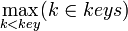
=> ersetze node durch seinen Vorgänger und entferne Vorgänger. (Dies führt zu einem effizienten Algorithmus, weil der Vorgänger immer zu Fall 1 oder Fall 2 gehört. Wenn er nämlich einen rechten Unterbaum hätte, könnte er nicht der Vorgänger sein.)
- Suche Vorgänger:
Die Funktion, die den Vorgänger sucht, muss den größten Knoten im lnken Unterbaum suchen. Da diese Funktion nur in Fall 3 aufgerufen wird, gibt es den linken Unterbaum immer.
def treePredecessor(node):
node = node.left
while node.right is not None:
node = node.right
return node
Die oben angegebenen Fälle werden durch folgende Funktion realisiert:
def treeRemove(node, key):
if node is None: # key nicht vorhanden
return node # => nichts tun
if key < node.key:
node.left = treeRemove(node.left, key)
elif key > node.key:
node.right = treeRemove(node.right, key)
else: # key gefunden
if node.left is None and node.right is None: # Fall 1
node = None
elif node.left is None: # Fall 2
node = node.right # +
elif node.right is None: # Fall 2
node = node.left
else: # Fall 3
pred = treePredecessor(node)
node.key = pred.key
node.left = treeRemove(node.left, pred.key)
return node
Komplexitätsanalyse
Um die Komplexität der Operationen auf einem Binärbaum zu bestimmen, müssen wir zunächst einige weitere Begriffe einführen:
- Pfad
- Ein Pfad zwischen zwei Knoten node1 und node2 ist eine Folge von Knoten nodek1,...,nodekn, so dass:
- nodek1 == node1
- nodekn == node2
- nodeki und nodeki+1 haben eine gemeinsame Kante.
 Ein Baum ist definiert als ein Graph, in dem es zwischen beliebigen Knoten stets genau einen Pfad gibt.
Ein Baum ist definiert als ein Graph, in dem es zwischen beliebigen Knoten stets genau einen Pfad gibt.
- Länge eines Pfades
- Anzahl der Kanten im Pfad (= Anzahl der Knoten - 1)
- Tiefe eines Knotens
- Pfadlänge vom Knoten zur Wurzel des Baumes (die Wurzel hat also die Tiefe 0)
- Tiefe des Baumes
- maximale Tiefe eines Knotens
Allen Baumoperationen ist gemeinsam, dass sie entlang genau eines Pfades im Baum absteigen (welcher Pfad dies ist ergibt sich aus der Ordnung der Schlüssel). Der Abstieg endet, wenn entweder der gesuchte Schlüssel gefunden wird, oder wenn erkannt wird, dass der Schlüssel nicht vorhanden ist (wenn das Kind, wo der Schlüssel sein müsste, den Wert None hat). Während des Abstiegs werden in jedem Knoten nur Anweisungen ausgeführt, die konstante Zeit benötigen (1 Vergleich, wenn die Suche in dem Knoten erfolglos beendet wird, 2 Vergleiche, wenn der Schlüssel gefunden wird, und 3 Vergleiche, wenn im rechten oder linken Teilbaun weiter abgestiegen werden muss). Daraus folgt, dass die Suche im ungünstigsten Fall die Komplexität
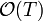
hat, wobei T die Tiefe des Baumes (= längster Pfad, der durchlaufen werden kann) ist.Ungünstigster Fall für die Baumoperationen
Um den ungünstigsten Fall für die Baumoperationen zu finden, müssen wir offensichtlich herausfinden, wie groß die Tiefe maximal werden kann. Es ist leicht zu erkennen, dass die Tiefe maximiert wird, wenn man sortierte Daten in den Baum einfügt:
- Fügt man [1,2,3,4,5] in dieser Reihenfolge ein, muss man bei treeInsert stets in den rechten Teilbaum absteigen (weil der nächste Schlüssel immer größer als der größte bisherige Schlüssel ist) und dort ein rechtes Kind einfügen. Es ergibt sich folgender Baum:

- Dieser Baum hat die Tiefe 4. Die Funktion treeSerach verhält sich dann wie sequentielle Suche, man hat also durch die Verwendung des Suchbaums nichts gewonnen.
Allgemein gilt: Alle Operationen eine binären Suchbaums haben im ungünstigsten Fall die Komplexität , wo N die Anzahl der Elemente im Baum bezeichnet. Eine offensichtliche Lösung der Problems besteht darin, die Elemente nicht in einer so ungünstigen Reihenfolge einzufügen (siehe Übungsaufgabe 5.1.c). Allerdings ist dies nicht immer möglich. Abhilfe schaffen dann selbst-balancierende Bäume.
Selbst-balancierende Suchbäume
Balance eines Suchbaumes
Um die Komplexität der Suchbaum-Operationen zu minimieren, müssen wir die Höhe des Baumes minimieren. Wir wollen also die Länge des längsten Pfades verkürzen, ohne dass ein anderer Pfad dadurch unnötig lang wird. Mit anderen Worten wollen wir erreichen, dass alle Pfade von der Wurzel zu den Blättern ungefährt die gleiche Länge haben. Diese Idee kann man formal durch den Begriff der Balance eines Suchbaums fassen. Um die Balance zu definieren, betrachten wir None als zusätzlichen Knoten, als sogenannten Sentinel (engl. für Wächter). Der sentinel-Knoten wird als rechter oder linker Nachfolger verlinkt, wenn der entsprechende Nachfolger nicht durch einen echten Knoten belegt ist:

Wir definieren nun:
- RS-Pfade
- Pfad von root → sentinel. In jedem Binärbaum gibt es mehrere RS-Pfade.
- Balance eines Baumes
- Differenz zwischen der Länge des längsten und kürzesten RS-Pfads:
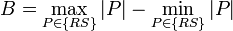
- wobei
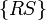
die Menge aller RS-Pfade bezeichnet, und |P| die Länge des Pfades P. - vollständiger Baum
- Balance
- Daraus folgt, dass alle Knoten (außer den Blättern) 2 Kinder haben müssen.
- perfekt balancierter Baum
- Balance
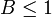
- alternative Definition für perfekt balancierte Bäume: Für jeden Knoten gilt, dass der rechte und linke Unterbaum ebenfalls perfekt balancierte Bäume sind und ihre Höhe sich höchstens um 1 unterscheidet. Leere Unterbäume sind per Definition perfekt balanciert und haben die Höhe Null.
Größe eines Baumes in Abhängigkeit von Balance und Tiefe

- vollständiger Baum
Aus der Abbildung erkennt man, dass Ebene k eines vollständigen Baumes stets 2k Knoten enthält (der grüne Knoten gehört nicht zum vollständigen Baum). Hat der Baum die Tiefe d, dann enthält er
- N = 20 + 21.....+ 2d = 2d+1 - 1
Knoten (und damit ebensoviele Datenelemente).
- perfekt balancierter Baum
Für eine gegebene Tiefe d kann kein Baum mehr Elemente enthalten als der entsprechende vollständige Baum. Also gilt für jeden perfekt balancierten Baum der Größe N:
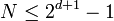
Der kleinste perfekt balancierte Baum der Tiefe d ist ein vollständiger Baum der Tiefe d-1 (mit
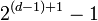
Knoten), wo an einem einzigen Knoten noch ein weiteres Datenelement angehängt wurde (grüner Knoten in der Abbildung). Dieser Baum enthält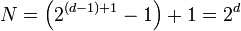
Datenelemente. Folglich gilt für perfekt balancierte Bäume die Ungleichung
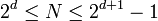
und demzufolge auch
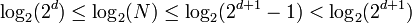
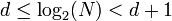
Da die Baumoperationen im ungünstigsten Fall die Komplexität
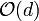
haben, gilt für perfekt balancierte Bäume, dass alle Operationen im schlechtesten Fall die Komplexität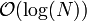
haben, das ist logarithmische Komplexität. Ein perfekt balancierter Baum wird z.B. durch die Datenstruktur des AVL-Baums realisiert. Die Implementation eines AVL-Baums ist jedoch kompliziert, und es zeigt sich, dass die Eigenschaft der perfekten Balance gar nicht notwendig ist, um logarithmische Komplexität zu garantieren. Wir definieren:
- balancierter Baum
- Für die Tiefe d(N) eines balancierten Baumes mit N Knoten gilt
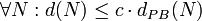
mit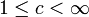
- wobei dPB(N) die Tiefe eines perfekt balancierten Baumes mit N Knoten ist. Für die Komplexität der Operationen in einem balancierten Baum gilt dann:
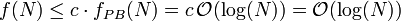
d.h. die Komplexität ändert sich nicht. Balancierte Bäume sind fast genauso schnell wie perfekt balancierte Bäume (bis auf den Faktor c), aber ihr Aufbau ist algorithmisch einfacher.
Idee selbst-balancierende Bäume
Die grundlegende Idee der selbst-balancierenden Bäume besteht darin, nach jeder Einfügung die Balance des Baumes zu optimieren. Dies geschieht am zweckmäßigsten im aufsteigenden Zweig der Rekursion, also nach der Rückkehr von den rekursiven Aufrufen der Funktion treeInsert. Dies entspricht folgendem Pseudo-Code:
def insertTree(node,key):
if node is None:
return Node(key)
if node.key == key:
return node
if key < node.key:
node.left = insertTree(node.left, key)
else:
node.right = insertTree(node.right, key)
optimiere die Balance hier
return node
Dabei muss man beachten, dass bei den Optimierungen die Suchbaumbedingung (Definition siehe oben) erhalten bleibt. Dies ist garantiert, wenn alle Umstrukturierungen durch die elementare Operation der Rotation implementiert werden. Eine Rechtsrotation ersetzt die Wurzel n eines Teilbaumes durch sein linkes Kind, und fügt die alte Wurzel als rechtes Kind der neuen Wurzel ein. Die Linksrotation ist die Inverse dieser Operation. Die Abbildung verdeutlicht die Umstrukturierungen:

Die Rotationen werden wie folgt implementiert:
def rotateRight(node):
newRoot = node.left
node.left = newRoot.right
newRoot.right = node
return newRoot
def rotateLeft(node):
newRoot = node.right
node.right = newRoot.left
newRoot.left = node
return newRoot
Man erkennt leicht, dass die Suchbaumbedingung erhalten bleibt. Wir erläutern dies für die Rechtsrotation, bei der Linksrotation gilt die Erklärung entsprechend. Knoten n hat einen größeren Schlüssel als Knoten L, denn L ist vor der Rechtsrotation das linke Kind von n. Nach der Rotation ist n deshalb korrekterweise das rechte Kind von L. Weiter gilt für den Teilbaum mit der Wurzel LR, dass er größer als L ist (denn er ist das rechte Kind von L), aber kleiner als n (denn er liegt im linken Teilbaum von n). Nach der Rechtsrotation ist diese Bedingung immer noch erfüllt, denn LR ist jetzt linker Teilbaum von n, welches wiederum rechter Teilbaum von L geworden ist. Alle anderen Teilbäume sind von der Rotation nicht betroffen.
Verschiedene Arten von selbst-balancierenden Bäumen unterscheiden sich im Wesentlichen dadurch, wann welche Rotation ausgeführt wird. Wichtige Beispiele sind
- AVL-Bäume (älteste Variante)
- Rot-Schwarz-Bäume (verbreitetste Variante)
- Treaps (flexibelste Variante, siehe Übung 6.1)
- Splay trees
- Andersson-Bäume (einfachste Variante, siehe unten)
Daneben wird gern die Skip List verwendet, die aber kein Binärbaum ist, sondern auf einem anderen Prinzip beruht.
Andersson-Bäume
Jeder selbst-balancierende Baum benötigt Zusatzinformationen, die die augenblickliche Balance beschreiben, so dass diese gegebenenfalls optimiert werden kann. Der Andersson-Baum fügt zu diesem Zweck in jedem Knoten ein neues Feld level ein, welches mit 1 initialisiert wird:
class AnderssonNode:
def__init__(self, key):
self.key = key
self.left = self.right = None
self.level = 1
Grob gesprochen kodiert das level-Feld den Abstand des Knotens vom Sentinel. Genauer gelten folgende
Regeln
- Es gibt vertikale Kanten (parent.level == child.level + 1 ) und horizontale Kanten (parent.level == child.level).
- Die reduzierte Länge eines Pfades zwischen zwei Knoten wird berechnet, indem nur die vertikalen Kanten im Pfad gezählt werden.
- Das Sentinel hat level = 0. Alle Kanten zum Sentinel sind vertikal.
- Die reduzierte Höhe eines Knotens entspricht der reduzierten Länge des Pfades von diesem Knoten zum Sentinel. Das level-Feld jedes Knotens speichert die reduzierte Höhe dieses Knotens. Folglich gilt für alle Knoten, die direkt mit dem Sentinel verbunden sind, level = 1. Insbesondere gilt dies auch für neu eingefügte Knoten (siehe obige Initialisierung).
Die nächsten zwei Regeln sichern die Balance:
- Alle RS-Pfade haben die gleiche reduzierte Länge. Dies ist äquivalent zu der Bedingung, dass die Wurzel des Andersson-Baumes über alle möglichen RS-Pfade auf dem gleichen Level erreicht wird.
- Kein Pfad hat 2 aufeinander folgende horizontale Kanten.
Die letzte Regel führt zu starken algorithmischen Vereinfachungen gegenüber den konzeptionell sehr ähnlichen Rot-Schwarz-Bäumen:
- Nur Kanten zum rechten Kind dürfen horizontal sein.
Das folgende Bild zeigt einen Andersson-Baum, bei dem allerdings nicht alle Verbindungen zum Sentinel eingezeichnet sind:
Es gilt folgender
- Satz
- Jeder Andersson-Baum ist balanciert. Beweis:
- 1. Sei hr die reduzierte Höhe des Andersson-Baumes. Die Eigenschaft, dass alle RS-Pfade die reduzierte Länge hr (also die gleiche reduzierte Länge) haben, hat eine wichtige Folge: Hat der Andersson-Baum keine horizontalen Kanten, so muss er ein vollständiger Baum der Tiefe dv = hr - 1 sein, denn nur ein vollständiger Baum hat die Eigenschaft, dass alle RS-Pfade die gleiche Länge besitzen. Gibt es hingegen horizontale Kanten, muss der Andersson-Baum mehr Elemente enthalten als der vollständige Baum der Tiefe dv. Folglich gilt für die Anzahl der Knoten eines Andersson-Baumes:
- 2. Da niemals zwei aufeinenderfolgende Kanten horizontal sein dürfen, ist in jedem RS-Pfad höchstens die Hälfte aller Kanten horizontal. Daher gilt für die Tiefe d eines Andersson-Baumes
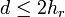
- 3. Fasst man 1. und 2. zusammen, erhält man:
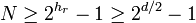
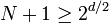
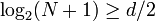
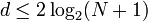
.
- Da die Komplexität der Baumoperationen
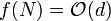
ist, gilt für den Andersson-Baum: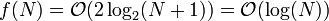
- q.e.d.
Wie erreicht man die Balance?
Der Baum ist nicht mehr balanciert, wenn obige Regeln verletzt sind. Dies kann durch Einfügen eines neuen Knotens oder durch Löschen eines Knotens passieren. Nach jeder Einfügung haben sowohl der neue Knoten als auch sein Vater das Level 1 (denn der Vater war vorher direkt mit dem Sentinel verbunden). Kanten zu neu eingefügten Knoten sind deshalb immer horizontal. Dies kann die Regeln verletzen, indem entweder
- eine horizontale Kante zum linken Kind enstanden ist (falls der neue Knoten ein linkes Kind ist), oder
- zwei aufeinander folgende horizontale Kanten zu rechten Kindern entstanden sind (falls der neue Knoten ein rechtes Kind ist, und sein Vater bereits ein horizontales rechtes Kind war).
Diese Fehler können durch Rotation leicht behoben werden:
- Linke horizontale Kanten werden durch Rechtsrotation in rechte horizontale Kanten verwandelt.
- Bei zwei aufeinander folgenden rechten horizontalen Kanten wird der mittlere Knoten um eine Ebene angehoben.
Dabei ist zu beachten, dass die erste Reparatur einen neuen Fehler erzeugen kann: Es können zwei aufeinanderfolgende rechte horizontale Kanten enstehen. Daher muss die zweite Operation stets nach der ersten ausgeführt werden. Das Anheben des Levels in der zweiten Operation kann wiederum dazu führen, dass auf der nächsthöheren Ebene verbotene horizontale Kanten entstehen. Deshalb müssen die Reparaturoperationen auf der nächsten Ebene rekursiv wiederholt werden. Dies führt uns zu folgender Implementation des Insert-Algorithmus
def anderssonTreeInsert(node,key):
if node is None:
return AnderssonNode(key)
if node.key == key:
return node
if key < node.key:
node.left = anderssonTreeInsert(node.left, key)
else:
node.right = anderssonTreeInsert(node.right, key)
if node.left is not None and node.level == node.left.level: # linke horizontale Kante
node = rotateRight(node) # wird zu rechter horizontaler Kante gemacht
if node.right is not None and node.right.right is not None and node.level==node.right.right.level: # aufeinanderfolgende horizontale Kanten
node = rotateLeft(node) # mache den mittleren Knoten zur Wurzel des Teilbaums
node.level += 1 # und hebe die Wurzel um ein level an
return node
Da die Reparaturoperationen auf dem Rückweg von der Rekursion ausgeführt werden, ist gewährleistet, dass sie auf der nächsten Ebene des Baumes ebenfalls ausgeführt werden, falls nötig. Die folgende Skizze verdeutlicht die Anwendung der Reparaturen, wenn Knoten c über eine linke horizontale Kante an Knoten b angefügt wurde. Im oberen Beispiel genügt die erste Operation zur Reparatur, beim unteren Beispiel muss hingegen auch noch die zweite Operation angewendet werden.
Die folgende Illustration verdeutlicht das Verhalten des Andersson-Baumes, wenn die Schlüssel in der Folge [5,4,3,2,1] eingefügt werden. Beim einfachen Binärbaum sind solche vorsortierten Daten sehr ungünstig und führen zu entarteten Bäumen mit linearer Zugriffzeit. Die Umstrukturierungen beim Andersson-Baum stellen hingegen sicher, dass die Balance immer gewahrt bleibt. Wir stellen die Knoten hier als Paare (key, level) dar, Pfeile markieren die Richtung von horizontalen Kanten. Wie oben beschrieben, werden neue Knoten zunächst normal in den Baum eingefügt und ihr Level mit 1 initialisiert. Wenn dadurch Bedingungen verletzt werden, werden die notwendigen Umstrukturierungen durchgeführt.
Beim Einfügen des ersten Knotens (Schlüssel 5) gibt es noch keine Probleme:
(5,1)
Der zweite Knoten (Schlüssel 4) wird zum linken Kind des ersten. Da beide Knoten sich auf Level 1 befinden, ensteht dadurch eine verbotene horizontale Kante nach links, die durch eine Rechtsrotation (RR) in eine erlaubte horizontale Kante nach rechts umgewandelt wird. Danach ist Knoten 4 die neue Wurzel des Baumes:
(4,1) <-- (5,1) ==RR==> (4,1) --> (5,1)
Das Einfügen von Schlüssel 3 verursacht wieder eine horizontale linke Kante, die in eine rechte umgewandelt wird:
(3,1) <-- (4,1) --> (5,1) ==RR==> (3,1) --> (4,1) --> (5,1)
Nun gibt es aber zwei horizontale Kanten hintereinander. Wir führen deshalb eine Linksrotation (LR) durch und heben das Level des mittleren Knotens um 1 an:
(4,2)
/ \
(3,1) --> (4,1) --> (5,1) ==LR==> (3,1) <-- (4,1) --> (5,1) ==Lift==> (3,1) (5,1)
Damit ist der Baum wieder korrekt. Das Einfügen des Schlüssels 2 führt wieder zu einer verbotenen linken Kante, die durch Rechtsrotation beseitigt wird:
(4,2)
(4,2) / \
/ \ ==RR==> / \
(2,1) <-- (3,1) (5,1) / \
(2,1)-->(3,1) (5,1)
Nun fügen wir Schlüssel 1 ein, der ebenfalls zu einer verbotenen linken Kante führt, aber die Reparatur des Fehlers durch Rechstsrotation würde zwei aufeinanderfolgende horizontale Kanten erzeugen. Knoten 2 muss deshalb angehoben werden:
(4,2) (2,2) <-- (4,2)
/ \ / \ \
/ \ ===> / \ \
/ \ / \ \
(1,1) <-- (2,1)-->(3,1) (5,1) (1,1) (3,1) (5,1)
Jetzt ist aber bei Level 2 eine verbotene linke horizontale Kante entstanden, die wir wieder durch Rechtsrotation in eine erlaubte rechte horizontale Kante verwandeln, so dass Knoten 2 nun die Wurzel des Baumes bildet:
(2,2) <-- (4,2) (2,2) --> (4,2)
/ \ \ / / \
/ \ \ ===> / / \
/ \ \ / / \
(1,1) (3,1) (5,1) (1,1) (3,1) (5,1)
Jetzt sind alle Bedingungen erfüllt. Man erkennt, dass alle reduzierten RS-Pfade die gleiche Länge, nämlich 2, haben (dies entspricht gerade dem Level der Wurzel des Baumes). Die tatsächliche Tiefe des Baumes (längster Pfad von der Wurzel zu einem Blatt, wobei horizontale Kanten mitgezählt werden) beträgt 2. Für einen Binärbaum mit 5 Knoten ist die Tiefe 2 gerade der beste erreichbare Wert, der Andersson-Baum verhält sich hier also optimal.
Die Löschoperation anderssonTreeRemove benötigt in jedem Knoten bis zu 5 Rotationen. Wegen der Einzelheiten verweisen wir auf Anderssons Originalartikel.
Beziehungen zwischen dem Suchproblem und dem Sortierproblem
Sortieren mit Hilfe eines selbst-balancierenden Suchbaums
Mit Hilfe eines selbst-balancierenden Suchbaums kann ein effizienter Sortieralgorithmus implementiert werden, indem man zunächst die Daten in beliebiger Reihenfolge in einen Baum einfügt, und dann in der richtigen Sortierung wieder ausliest.
a = ... # unsortiertes Array
t = None # leerer Andersson-Baum
for e in a:
t = anderssonTreeInsert(t, e) # Baum erzeugen
r = [] # leeres dynamisches Array
treeSort(t, r)
# r enthält jetzt die Daten aus a in sortierter Reihenfolge
Die Funktion treeSort navigiert im Sinne eines sogenannten in-order traversals durch den Baum und fügt die Datenelemente in der richtigen Reihenfolge an des Array an:
def treeSort(node,array): # dynamisches Array als 2. Argument
if node is None: #
return
treeSort(node.left, array) # rekursiv
array.append(node.key) # amortisiert
treeSort(node.right, array) # rekursiv
- Komplexität
- Jede Einfügeoperation in den Baum hat logarithmische Komplexität. Der Aufbau eines Baumes aus N Elementen hat daher Komplexität
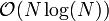
. - treeSort führt in jedem Knoten eine oder zwei Operationen mit Komplexität sowie zwei rekursive Aufrufe aus. Die Auflösung der Rekursion ergibt
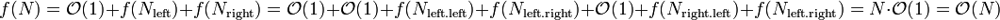
- Insgesamt erhalten wir also Komplexität
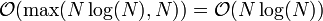
wie bei Merge Sort. Allerdings sind der konstante Faktor sowie der Speicherverbrauch größer, so dass diese Sortiermethode in der Praxis kaum angewendet wird.
Sortieren als Suchproblem
Diesem Thema ist jetzt ein eigenes Kapitel Sortieren in linearer Zeit gewidmet.